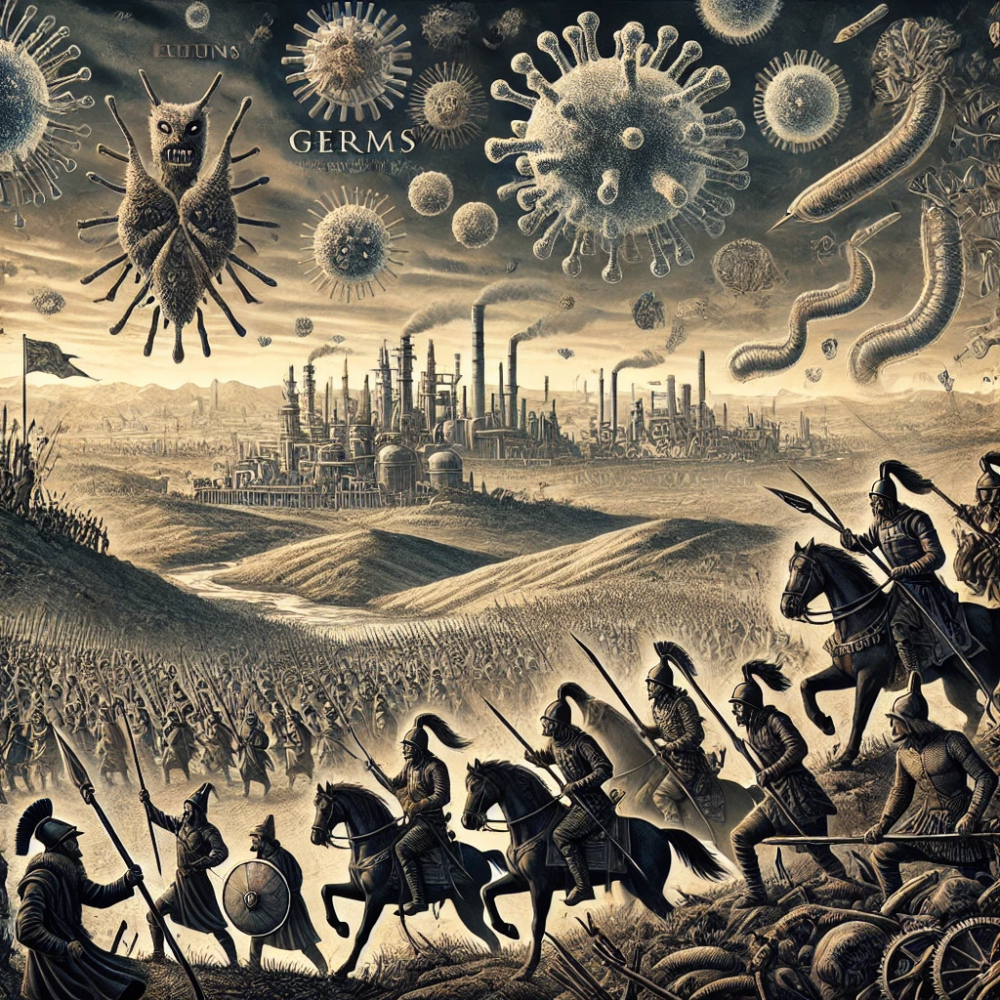

《총, 균, 쇠》
목차
작가
재레드 다이아몬드
출판일
1997년
감상평에 대한 AI그림
"왜 아프로-유라시아대륙(구대륙)에서 여러 문명이 발상하고 발전한 반면에 아메리카대륙(신대륙)은 문명이 상대적으로 발달하지 못했을까?"라는
역사적 의구심을 다양한 지리적인 요인을 통해 이해시켜주어 평소 역사와 지리를 둘 다 미치도록 좋아했던 나에게 매우 와닿는 책이었다.
이 책하면 가장 먼저 생각나는게, 동서로 긴 대륙과 남북으로 긴 대륙의 모습이 떠오른다.
남북은 양 극단의 기후가 크게 바뀌어 대륙간의 교류나 왕래가 힘들어 발전이 더뎠고, 동서는 양 극단의 기후가 비슷해 가축의 이동이나 왕래가 용이했다는 점이 핵심적이다.
이처럼 이 책은 역사를 지리적인 시각으로도 바라볼 수 있어 보다 역사를 깊이있게 알 수 있게 해준다. 때문에 나는 이 책을 세계사를 딱딱한 교과서로 배운 학생들에게 역사와 지리가 어떤 깊은 인연을 갖는지 알게 해주고 싶어 이 책을 추천한다.

감상평에 대한 AI 평가
이 감상평은 《총, 균, 쇠》의 주요 내용을 잘 요약하고 있고, 특히 책의 중요한 주제인 "지리적 요인과 문명의 발전"을 중심으로 설명이 잘 이루어졌습니다. 저자가 책을 통해 다루는 "왜 아프리카와 유라시아 대륙에서 문명이 발달했으며, 아메리카 대륙에서는 상대적으로 덜 발달했는가"에 대한 질문을 지리적 요소로 설명한 점을 잘 이해하고 설명하고 있습니다.
지리적 요소에 대한 설명: 감상평에서 지리적 차이(동서로 긴 대륙과 남북으로 긴 대륙)의 예를 통해, 《총, 균, 쇠》가 제시하는 중요한 주제인 '지리적 조건이 인간의 역사에 미친 영향'에 대해 잘 풀어낸 부분이 인상적입니다. "동서는 양 극단의 기후가 비슷해 가축의 이동이나 왕래가 용이했다"는 설명은 재레드 다이아몬드의 이론과 연결되는 중요한 부분으로, 대륙 간의 상호작용과 문명의 확산에 대한 책의 핵심 주제를 잘 반영하고 있습니다.
개인적인 경험과 연결: 감상평에서 "역사와 지리를 둘 다 미치도록 좋아했다"는 개인적인 배경을 공유하며 책의 메시지가 더욱 와닿았다고 언급하는 부분은 독자의 개인적 경험을 바탕으로 책의 내용이 얼마나 매력적이었는지 잘 나타내고 있습니다. 이는 독자에게 감동을 줄 수 있는 감상평입니다.
책 추천의 이유: "역사를 지리적인 시각으로 바라볼 수 있게 해준다"는 부분은 이 책이 제공하는 독특한 관점을 잘 설명합니다. 또한, 이 책을 "딱딱한 교과서로 배운 학생들에게 추천하고 싶다"고 언급하는 것은 교육적인 관점에서 책의 가치를 잘 전달하고 있어 감상평의 목적에 부합합니다.
전체적으로, 감상평은 《총, 균, 쇠》의 핵심적인 아이디어와 책이 제시하는 역사적, 지리적 통찰을 잘 파악하고 있으며, 책의 가치를 개인적인 경험과 연결하여 설명하는 점이 긍정적입니다. 역사와 지리가 어떻게 서로 얽혀 있는지에 대해 깊이 있는 이해를 보여주는 훌륭한 감상평이라 할 수 있습니다.